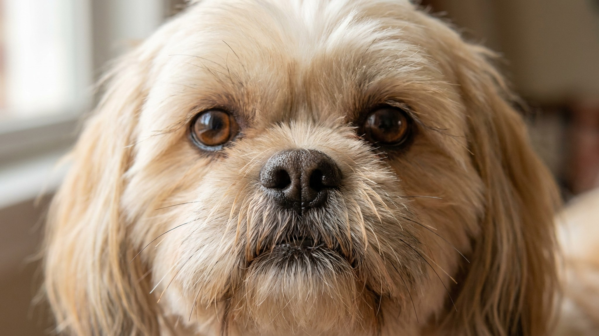

У ши-тцу почти нет «лёгких» дней в уходе: длинная шерсть закрывает глаза уже через неделю после стрижки, складки на мордочке накапливают влагу, а большие выпуклые глаза реагируют на малейший раздражитель. Владельцы, которые узнали об этом после покупки, тратят гораздо больше — и времени, и денег у грумера. Ниже — конкретный план ежедневного и еженедельного ухода за ши-тцу.
🐾 Первая помощь — всегда под рукой
AnimaLife подскажет, что делать в тревожной ситуации с питомцем ещё до визита к врачу. Откройте в один тап.
Шерсть ши-тцу растёт непрерывно и быстро попадает в поле зрения. Это не только эстетическая проблема: постоянный контакт шерсти с роговицей раздражает глаз, провоцирует слезотечение и создаёт влажную среду вокруг глаза. Два решения:
В любом случае шерсть у внутреннего угла глаза нужно убирать ежедневно: влажной салфеткой или специальным лосьоном снимайте выделения и не давайте шерсти слипаться в «сосульки».
Глубокие складки у носа и под глазами — особенность плоской морды ши-тцу. В них собирается влага после еды, питья и обычного слезотечения. Влажная складка — готовая среда для раздражения кожи.
Ежедневно после кормления протирайте складки сухой мягкой тканью или специальными безалкогольными салфетками. Проверьте: если кожа в складке покрасневшая, пахнет или собака трётся мордой об пол — это повод обратиться к ветеринару, не ждите.
Шерсть ши-тцу — длинная, мягкая, с подшёрстком. Без ежедневного расчёсывания колтуны образуются за 2–3 дня, особенно за ушами, в подмышках и в паху. Вычесать сформировавшийся колтун болезненно для собаки и почти невозможно без специальных средств.
Глаза ши-тцу выпуклые и широко открытые — это анатомия брахицефальной породы. Они быстрее сохнут на ветру и реагируют на пыль, пыльцу, шерсть. Небольшие прозрачные выделения по утрам — норма. Насторожить должно другое:
Любой из этих признаков — основание для визита к ветеринару в течение суток, не наблюдайте неделями.
Уши ши-тцу висячие и закрытые — плохая вентиляция создаёт условия для накопления загрязнений. Раз в 1–2 недели осматривайте ушную раковину и убирайте видимые загрязнения специальным лосьоном на ватном диске. Неприятный запах, тёмный налёт или частое почёсывание уха — к ветеринару.
Ши-тцу требует последовательного ухода, но именно он определяет, насколько комфортно собаке каждый день. Выстроенная рутина занимает 10–15 минут — и избавляет от дорогостоящих проблем в будущем.
🐾 Экономьте на лишних визитах к врачу
Сначала спросите AI-ветеринара в AnimaLife — часто этого достаточно, чтобы понять, нужен ли визит к врачу.
🐾 Понравился разбор?
Подпишитесь на канал — каждый день разбираем по одному тревожному симптому у кошек и собак: что в пределах нормы, а когда пора к врачу. Подпишитесь, чтобы не пропустить разбор, который может спасти здоровье вашего питомца.
Материал носит информационный характер и не заменяет очную консультацию ветеринара.